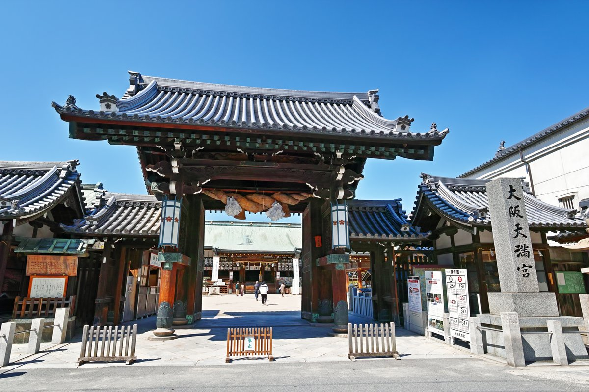
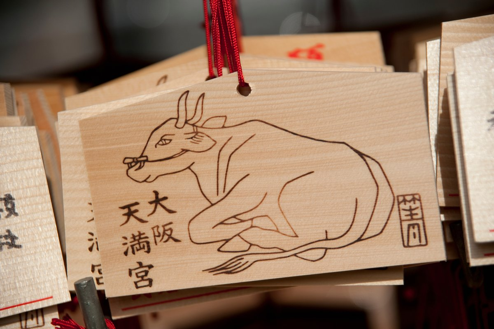

One of Japan's Most Revered Shrines — Steps from Danke
Tucked into the backstreets of Tenjinbashi, just a short walk from Danke Izakaya, stands one of Osaka's most historically significant landmarks: Osaka Tenmangu Shrine (大阪天満宮). Founded in 949 AD by Emperor Murakami, this magnificent shrine is dedicated to Sugawara no Michizane — a revered 9th-century scholar, poet, and statesman who was deified after his death as Tenjin, the god of learning and academics. Today, the shrine draws students, scholars, and curious travelers from across Japan and the world, each coming to pray for success in exams, career advancement, and the pursuit of wisdom.
For visitors exploring the Tenjinbashi area, a visit to Osaka Tenmangu is an unmissable cultural experience. The shrine sits within easy walking distance of the Tenjinbashi shopping arcade, making it a natural complement to an evening in the neighborhood — whether you arrive before dinner to absorb the atmosphere or stop by after a meal at Danke to stroll the illuminated approach.
The Legend of Sugawara no Michizane
To understand Osaka Tenmangu, you first need to know the story of the man it honors. Sugawara no Michizane (845–903 AD) was a brilliant scholar and politician who rose to become one of the most powerful officials in the imperial court. He was a prolific poet, composing hundreds of waka and Chinese verse, and he reformed the educational system of his era. His talents, however, attracted jealousy from rival clans, and he was falsely accused and exiled to Dazaifu in Kyushu, where he died of illness and grief in 903 AD.
Shortly after his death, a series of disasters struck Kyoto: drought, famine, floods, and the deaths of several officials who had opposed him. The imperial court, believing these calamities were the vengeful spirit of Michizane, posthumously restored his rank and honors and enshrined him at Kitano Tenmangu in Kyoto in 947 AD. Osaka Tenmangu followed just two years later, in 949 AD, established where Michizane himself had once prayed on his way to exile.
The ox is inseparable from the Tenjin legend. Michizane was born in the year of the ox and died in the year of the ox. According to tradition, the ox that carried his remains to Dazaifu refused to move any further and sat down, indicating that he should be buried at that spot. Today, bronze ox statues stand at Tenmangu shrines throughout Japan, and visitors rub them for good luck and intelligence.

Ema: Writing Your Wishes on Wood
One of the most meaningful things you can do at Osaka Tenmangu — or any Shinto shrine — is purchase and write an ema (絵馬). These small wooden plaques, traditionally decorated with the shrine's sacred symbol (here, the ox), are used to write prayers and wishes. You hang your completed ema on a wooden rack near the main hall, where it remains as an offering to the deity.
The tradition dates back over a thousand years, when worshippers offered live horses to shrines. Over time, wooden tablets bearing painted horses replaced the live animals, and eventually the painted image expanded to include any sacred symbol. At Osaka Tenmangu, ema typically feature the ox, and visitors write wishes related to academic success, career goals, or personal challenges.
You do not need to write in Japanese. Many international visitors write in their own language, and the deity is understood to hear all prayers equally. Ema are usually available at the shrine office for 500 to 1,000 yen.
Tenjin Matsuri: One of Japan's Three Greatest Festivals
Osaka Tenmangu is the origin point of the Tenjin Matsuri (天神祭), ranked among Japan's three greatest festivals alongside Kyoto's Gion Matsuri and Tokyo's Kanda Matsuri. Held annually on July 24 and 25, the festival has been celebrated continuously for over 1,000 years.
The main event on the evening of July 25 is a spectacular river procession: more than 100 decorated boats, illuminated by lanterns and accompanied by traditional music, parade along the Okawa River through central Osaka. The evening sky above is filled with fireworks launched from both riverbanks, creating a display that rivals anything in the country. Over one million people attend the festival each year, lining the riverbanks and packing the surrounding neighborhoods.
If your visit to Osaka happens to fall around late July, adjusting your itinerary to witness even a portion of the Tenjin Matsuri is strongly recommended. The festival atmosphere transforms the entire Tenjinbashi and Tenma neighborhood into something truly extraordinary.
Visiting the Shrine: Practical Information
Location and Access
Osaka Tenmangu Shrine is located at 2-1-8 Tenjinbashi, Kita-ku, Osaka. From Danke Izakaya, the shrine is approximately a 5-minute walk north along the Tenjinbashi shopping arcade. By public transport:
- Osaka Metro Tanimachi Line / Sakaisuji Line: Minamimorimachi Station, Exit 4 (3-minute walk)
- JR Tozai Line: Osaka-Tenmangu Station, Exit 1 (2-minute walk)
Hours and Admission
The shrine grounds are open daily from approximately 9:00 AM to 5:00 PM, though the outer precincts can be accessed outside these hours. Admission to the shrine is free. Special inner halls and the treasure house have separate admission fees.
What to See Inside
- Romon Gate (楼門): The striking two-story gate that marks the main entrance. Built in the traditional shrine architecture style, this is the most photographed element of the complex.
- Main Hall (本殿): The heart of the shrine, where Sugawara no Michizane is enshrined. Approach respectfully, bow twice, clap twice, make your prayer, and bow once more — this is the standard Shinto ritual.
- Bronze Ox Statues: Find the bronze ox near the main hall and rub its head for good luck, particularly for academic or intellectual pursuits.
- Ema Racks: Rows of wooden plaques bearing wishes from visitors. The density and variety of wishes — in Japanese, Chinese, Korean, English, and many other languages — is a moving reminder of how universally humans seek guidance and hope.
- Treasure House (宝物館): Houses historical artifacts related to the shrine and the Tenjin Matsuri, including portable mikoshi shrines and festival costumes.
Combining Shrine and Dinner at Danke
The proximity of Osaka Tenmangu to Danke Izakaya makes for a natural pairing. An early evening visit to the shrine — arriving around 4:30 to 5:00 PM — lets you experience the grounds in the soft golden light before closing time, offering a calm and contemplative counterpoint to the lively izakaya evening ahead.
From the shrine, it is a short stroll south through the covered shopping arcade to reach Danke. The contrast between ancient ritual and the casual warmth of a neighborhood izakaya is, in many ways, the essence of Japanese cultural life — profound tradition and easygoing pleasure existing comfortably side by side.
After a full evening of food and drink at Danke, the walk back past the illuminated torii gate of the shrine on your way to the station is quietly memorable.
日本最受崇敬的神社之一——就在だんけ附近
在天神桥的小巷深处，距离だんけ居酒屋仅几步之遥，矗立着大阪最具历史意义的地标之一：大阪天满宫（大阪天満宮）。这座宏伟的神社由村上天皇于公元949年创建，供奉的是菅原道真——一位受人尊崇的9世纪学者、诗人和政治家，他在去世后被神化为天神，即学问与学业的守护神。如今，神社吸引着来自日本和世界各地的学生、学者和好奇的旅行者，他们前来祈祷考试成功、事业发展和追求智慧。
对于探索天神桥地区的游客来说，参访大阪天满宫是一次不可错过的文化体验。神社就在天神桥商业街步行可达的地方，与在这一带度过的夜晚相得益彰——无论是晚饭前来感受氛围，还是在だんけ用餐后顺道漫步于灯火辉煌的参道。
菅原道真的传说
要了解大阪天满宫，首先需要了解它所供奉的人物的故事。菅原道真（公元845—903年）是一位才华横溢的学者和政治家，曾晋升为朝廷最有权势的官员之一。他是多产的诗人，创作了数百首和歌和汉诗，并改革了那个时代的教育制度。然而，他的才能招来了竞争对手的嫉妒，他被诬陷并流放到九州的太宰府，于公元903年在病痛和悲愁中离世。
他去世后不久，京都相继发生一系列灾难：干旱、饥荒、洪水，以及几位曾反对他的官员相继离世。朝廷认为这些灾难是道真的怨灵所为，于是在公元947年在京都北野天满宫为他恢复名誉并建社供奉。大阪天满宫于公元949年随即建立，地点正是道真本人在流放途中曾经祈祷之处。
牛与天神传说密不可分。道真生于牛年，也卒于牛年。据传说，运送他遗体前往太宰府的牛突然停下不肯再走，这被认为是指示他应该葬于此处的神迹。如今，全日本的天满宫神社都矗立着铜牛雕像，参拜者抚摸铜牛以求好运和智慧。
绘马：在木牌上写下心愿
在大阪天满宫——或任何神道神社——最有意义的事情之一，就是购买并书写绘马（絵馬）。这些小巧的木质牌匾，传统上印有神社的神圣符号（此处为牛），用于书写祈祷和愿望。完成后，你将绘马挂在正殿附近的木架上，作为对神明的供奉。
这一传统可以追溯到一千多年前，当时的信徒向神社供奉活马。随着时间推移，绘有马匹图案的木牌取代了活马，绘制的图案也逐渐扩展到任何神圣符号。在大阪天满宫，绘马通常印有牛的图案，参拜者书写与学业成功、职业目标或个人挑战相关的心愿。
你不需要用日语书写。许多国际游客用自己的语言书写，神明被认为能平等地倾听所有祈祷。绘马通常在神社社务所购买，价格约500至1,000日元。
天神祭：日本三大祭之一
大阪天满宫是天神祭（天神祭）的发源地，与京都祇园祭和东京神田祭并列为日本三大祭。每年7月24日和25日举行，这一祭典已连续传承逾千年。
7月25日傍晚的主要活动是壮观的水上巡游：超过100艘装饰精美的船只，在灯笼照耀下伴随传统音乐沿大川穿越大阪市中心。傍晚的天空中，从两岸同时燃放的烟花照亮夜空，场面震撼，堪称全国最精彩的烟火表演之一。每年超过一百万人参加祭典，沿河岸列队观看，周边街区人山人海。
如果你的大阪之行恰逢7月下旬，强烈建议你调整行程，亲身感受天神祭的一部分。祭典的氛围会将整个天神桥和天满街区变得非同凡响。
参访神社：实用信息
地址与交通
大阪天满宫位于大阪市北区天神桥2-1-8。从だんけ居酒屋出发，沿天神桥商业街向北步行约5分钟即可到达。公共交通：
- 大阪地铁谷町线／堺筋线：南森町站4号出口（步行约3分钟）
- JR东西线：大阪天满宫站1号出口（步行约2分钟）
开放时间与门票
神社境内每日开放时间约为上午9时至下午5时，外部区域在此时间外也可进入。入场免费。特别内殿和宝物馆需单独购票。
必看景点
- 楼门：标志性的两层正门，是整个建筑群中被拍摄最多的元素，以传统神社建筑风格建造。
- 本殿：神社的核心，供奉着菅原道真。参拜时请保持庄重：二鞠躬、二拍手、默祷、一鞠躬——这是标准的神道参拜礼仪。
- 铜牛雕像：在正殿附近找到铜牛，抚摸牛头可以祈求好运，尤其适合祈求学业或事业上的成就。
- 绘马架：一排排挂满参拜者心愿的木牌。用日语、中文、韩语、英语和许多其他语言书写的愿望，令人深刻地感受到人类对指引与希望的普遍追求。
- 宝物馆：收藏与神社和天神祭相关的历史文物，包括便携式神龛和祭典服装。
神社参拜与在だんけ用晚餐的完美组合
大阪天满宫与だんけ居酒屋的近距离造就了一个自然的完美组合。傍晚早些时候参访神社——约下午4时30分至5时到达——可以在闭门前趁着柔和的金色光线感受神社，为之后热闹的居酒屋夜晚提供一段宁静而沉思的序曲。
离开神社后，沿有顶棚的商业街向南短暂漫步即可到达だんけ。古老仪式与社区居酒屋温馨随意氛围之间的反差，在很多方面正是日本文化生活的精髓——深厚传统与轻松愉悦和谐共存。
在だんけ度过一个充实的餐饮夜晚后，回程时经过神社灯火辉煌的鸟居前往车站，会是一段静静难忘的时刻。
일본에서 가장 존경받는 신사 중 하나 — 다케 바로 옆
텐진바시의 골목 안쪽, だんけ 이자카야에서 가까운 거리에 오사카에서 역사적으로 가장 중요한 랜드마크 중 하나가 있습니다: 오사카 덴만구 신사(大阪天満宮)입니다. 무라카미 천황에 의해 949년에 창건된 이 웅장한 신사는 스가와라노 미치자네를 모십니다. 그는 9세기의 저명한 학자, 시인, 정치가로, 사후에 학문과 학업의 수호신인 텐진으로 신격화되었습니다. 오늘날 신사에는 시험 합격, 직업적 성공, 지혜 추구를 기원하는 일본 전역과 세계 각지의 학생, 학자, 여행자들이 찾아옵니다.
텐진바시 지역을 탐방하는 방문객에게 오사카 덴만구 방문은 놓칠 수 없는 문화 체험입니다. 신사는 텐진바시 상점가에서 걸어서 갈 수 있는 거리에 위치해 있어, 동네에서의 저녁과 자연스럽게 연계됩니다 — 저녁 식사 전에 분위기를 느끼러 오든, だんけ에서 식사 후에 불 밝힌 참배길을 산책하든 좋습니다.
스가와라노 미치자네의 전설
오사카 덴만구를 이해하려면 먼저 이 신사가 모시는 인물의 이야기를 알아야 합니다. 스가와라노 미치자네(845~903년)는 천재적인 학자이자 정치가로 황실 조정에서 가장 막강한 관료 중 한 명이 되었습니다. 그는 수백 편의 와카와 한시를 지은 다작 시인이었으며, 당대의 교육 제도를 개혁했습니다. 그러나 그의 재능은 라이벌 가문의 질투를 샀고, 그는 억울하게 모함받아 규슈의 다자이후로 유배되어 903년에 병과 슬픔 속에 세상을 떠났습니다.
그의 사후 얼마 지나지 않아 교토에 잇따른 재앙이 닥쳤습니다: 가뭄, 기근, 홍수, 그리고 그를 반대했던 관료들의 죽음. 황실 조정은 이러한 재앙이 미치자네의 원혼 때문이라 믿고, 그의 지위와 명예를 사후에 복원하고 947년에 교토 기타노 덴만구에 모셨습니다. 오사카 덴만구는 그로부터 불과 2년 후인 949년에, 미치자네 자신이 유배 길에 기도를 올렸던 바로 그 자리에 세워졌습니다.
소는 텐진 전설과 뗄 수 없는 존재입니다. 미치자네는 소띠 해에 태어나 소띠 해에 세상을 떠났습니다. 전설에 따르면, 그의 유해를 다자이후로 옮기던 소가 더 이상 나아가기를 거부하며 앉아버렸는데, 이것이 그곳에 묻혀야 한다는 신의 뜻으로 받아들여졌습니다. 오늘날 일본 전국의 덴만구 신사에는 청동 소 조각상이 서 있으며, 참배객들은 행운과 지혜를 빌며 소를 쓰다듬습니다.
에마: 나무 패에 소원을 적다
오사카 덴만구 — 또는 어느 신도 신사에서든 — 가장 의미 있는 체험 중 하나는 에마(絵馬)를 구입하고 소원을 적는 것입니다. 이 작은 나무 패에는 전통적으로 신사의 신성한 상징(여기서는 소)이 그려져 있으며, 기도와 소원을 적는 데 사용됩니다. 완성된 에마는 본전 근처의 나무 걸이대에 걸어두면 신에게 바치는 공물이 됩니다.
이 전통은 천 년 이상 전으로 거슬러 올라갑니다. 신도들이 신사에 살아있는 말을 봉납하던 관습에서 시작되어, 시간이 흐르면서 말 그림이 그려진 나무 패가 실제 말을 대신하게 되었고, 결국 그려지는 그림도 신성한 상징으로 확장되었습니다. 오사카 덴만구에서는 에마에 주로 소 그림이 그려지며, 참배객들은 학업 성공, 직업 목표, 개인적 과제와 관련된 소원을 적습니다.
일본어로 적지 않아도 됩니다. 많은 외국인 방문객들이 자신의 언어로 소원을 적으며, 신은 모든 기도를 동등하게 듣는다고 여겨집니다. 에마는 보통 신사 사무소에서 500~1,000엔에 구입할 수 있습니다.
텐진 마쓰리: 일본 3대 축제 중 하나
오사카 덴만구는 텐진 마쓰리(天神祭)의 발원지로, 교토의 기온 마쓰리, 도쿄의 간다 마쓰리와 함께 일본 3대 축제로 꼽힙니다. 매년 7월 24~25일에 개최되며, 이 축제는 천 년 이상 끊임없이 이어져 왔습니다.
7월 25일 저녁의 메인 이벤트는 장관을 이루는 수상 퍼레이드입니다: 100척이 넘는 화려하게 장식된 배들이 등불에 빛나며 전통 음악에 맞춰 오사카 시내 오카와 강을 따라 행진합니다. 저녁 하늘에는 양쪽 강변에서 동시에 쏘아 올린 불꽃이 수놓아져 전국 최고 수준의 불꽃놀이를 연출합니다. 매년 100만 명 이상이 강변을 가득 메우고 주변 동네까지 인파로 넘칩니다.
오사카 방문이 7월 하순에 걸린다면, 텐진 마쓰리의 일부라도 직접 보기 위해 일정을 조정하는 것을 강력히 권합니다. 축제 분위기는 텐진바시와 텐마 동네 전체를 완전히 다른 세상으로 변화시킵니다.
신사 방문: 실용 정보
위치와 교통
오사카 덴만구는 오사카시 기타구 텐진바시 2-1-8에 위치합니다. だんけ 이자카야에서 텐진바시 상점가를 따라 북쪽으로 약 5분 걷면 도착합니다. 대중교통 이용 시:
- 오사카 메트로 타니마치선 / 사카이스지선: 미나미모리마치역 4번 출구 (도보 약 3분)
- JR 도자이선: 오사카텐만구역 1번 출구 (도보 약 2분)
운영 시간 및 입장료
신사 경내는 매일 오전 9시~오후 5시에 개방되며, 외부 구역은 이 시간 외에도 접근 가능합니다. 입장 무료. 특별 내전과 보물관은 별도 입장료가 있습니다.
꼭 봐야 할 것들
- 루몬(楼門): 정문 역할을 하는 인상적인 2층 문. 전통 신사 건축 양식으로 지어졌으며 신사 전체에서 가장 많이 사진에 담기는 요소입니다.
- 본전(本殿): 스가와라노 미치자네를 모시는 신사의 핵심. 경건하게 다가가 두 번 절, 두 번 박수, 기도, 한 번 절 — 이것이 신도의 표준 참배 의식입니다.
- 청동 소 조각상: 본전 근처의 청동 소를 찾아 머리를 쓰다듬으면 행운, 특히 학업이나 지적 성취를 기원할 수 있습니다.
- 에마 걸이대: 참배객들의 소원이 적힌 나무 패들이 즐비하게 걸려 있습니다. 일본어, 중국어, 한국어, 영어를 비롯한 여러 언어로 쓰인 소원들은 인간이 얼마나 보편적으로 인도와 희망을 갈망하는지 가슴 뭉클하게 느끼게 합니다.
- 보물관(宝物館): 신사와 텐진 마쓰리 관련 역사 유물을 소장하고 있으며, 이동식 미코시 신위와 축제 의상 등이 전시되어 있습니다.
신사 참배와 だんけ 저녁 식사의 완벽한 조합
오사카 덴만구와 だんけ 이자카야의 근접성은 자연스러운 완벽한 조합을 만들어냅니다. 이른 저녁에 신사를 방문하여 — 오후 4시 30분~5시쯤 도착 — 마감 전 부드러운 황금빛 햇살 속에서 신사를 경험하면, 앞으로의 활기찬 이자카야 저녁을 위한 조용하고 사색적인 서막이 됩니다.
신사에서 지붕 있는 상점가를 따라 남쪽으로 짧게 걸어 だんけ에 도착합니다. 고대 의식과 동네 이자카야의 편안한 온기 사이의 대비는, 여러 면에서 일본 문화 생활의 정수입니다 — 깊은 전통과 편안한 즐거움이 사이좋게 공존하는 모습입니다.
だんけ에서 알찬 저녁 식사를 마친 후, 역으로 돌아가는 길에 환하게 빛나는 도리이 앞을 지나칠 때의 그 조용한 감동은 오래도록 기억에 남을 것입니다.